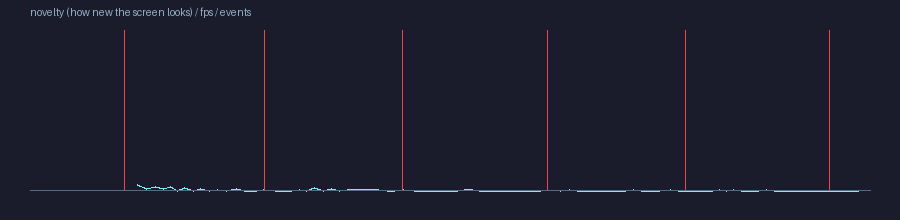
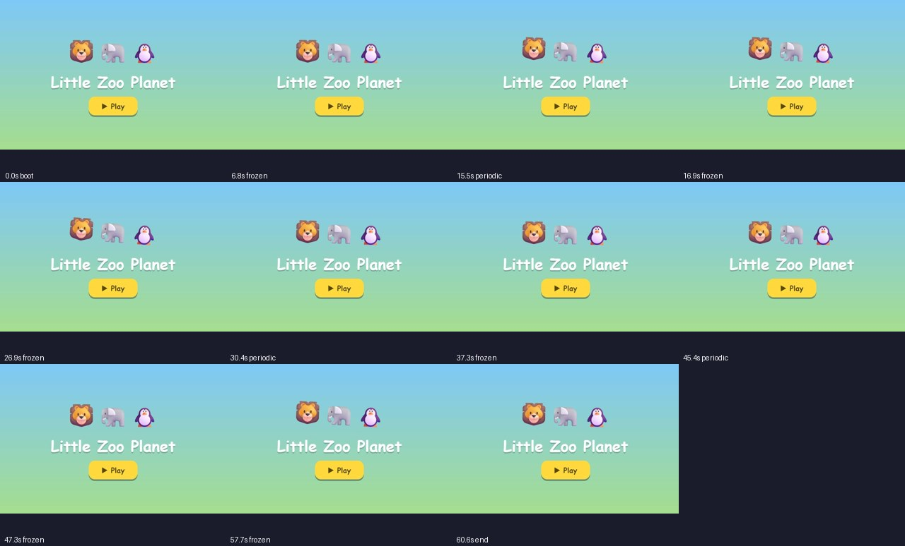

Playtest:
ROUGH
60.6s
played (explorer)
None
avg FPS (p5 None)
0 / 0
deaths / wins
0
map cells explored
0.0001
mean screen novelty
1
console errors
Issues
major
Input had no visible effect
— screen unchanged for 6s while input was held
t=6.8s
major
Input had no visible effect
— screen unchanged for 6s while input was held
t=16.9s
major
Input had no visible effect
— screen unchanged for 6s while input was held
t=26.9s
major
Input had no visible effect
— screen unchanged for 6s while input was held
t=37.3s
major
Input had no visible effect
— screen unchanged for 6s while input was held
t=47.3s
major
Input had no visible effect
— screen unchanged for 6s while input was held
t=57.7s
design
Low-novelty stretch (likely boring)
— 8s–60s: the screen barely changed and nothing happened
t=7.75s
Timeline

Key moments
